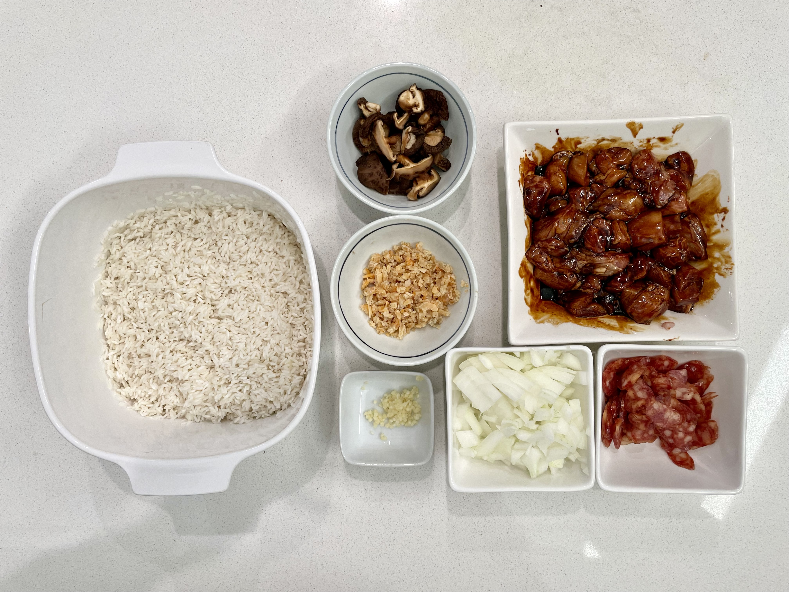
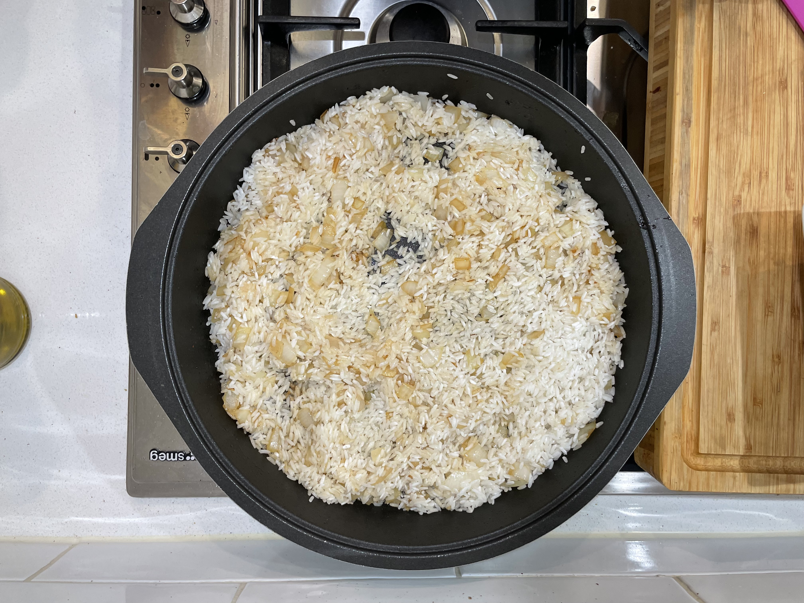

Lo mai gai
- Date
- Source Mum

Ingredients
- 2 metric cups glutinous rice
- 2 pieces lup chong, sliced
- ⅓ cup dried shrimp, re-hydrated in water then finely chopped
- ~10 dried shiitake mushrooms, re-hydrated then thickly sliced
- 3 chicken thigh fillets, cut into large cubes
- 1 onion, diced
- 1 clove garlic, crushed
- Fried onion
- Sauce (for chicken and rice):
- Light soy sauce
- Dark soy sauce
- Oyster sauce
- Cooking caramel
- Sesame oil
- Pepper

Method
- Rinse then soak glutinous rice in water for at least 2 hours.
- Heat pan on medium. Stir-fry the ingredients then set aside:
- Lup chong: Fry very briefly on medium heat, burns easily.
- Shrimp: Also medium heat, watch out for splattering, fry until fragrant.
- Mushrooms: Add small amount of water, cover and cook until water evaporated.
- Chicken: Marinate in sauce ingredients then pan fry for a few minutes covered, stirring occasionally. No need to fully cook these, just brown the outside.
- Stir-fry the onion and garlic until caramelised. Add rice and toast for a minute or so. 
- Add 2 cups water, sauces and some fried onion. Mix well.
- Steam for roughly 20 minutes in rice cooker or Bessemer dutch oven.